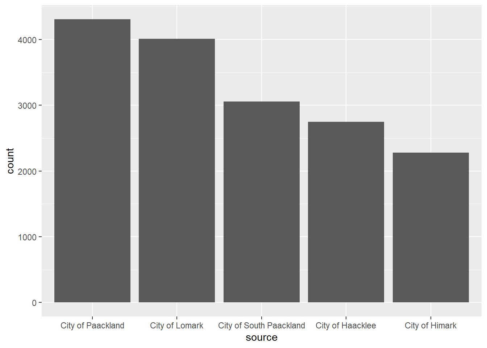

pacman::p_load(tidyverse, jsonlite, DT, lubridate,
igraph, tidygraph, ggraph,
visNetwork, sf)Take Home Exercise 3
VAST 2024 Mini Challenge 2
Mini-Challenge 2: Creating Signatures for Geo-Temporal Patterns
Mini-challenge 2 focuses on analyzing ship movements and shipping records to understand illegal fishing practices. FishEye analysts need help creating visualizations to show patterns of ship movements and identify suspicious behaviors. They also want to understand how the commercial fishing community changed after a company was caught fishing illegally.
The details of the mini challenge can be found here.
Tasks and Questions
FishEye analysts need your help to perform geographic and temporal analysis of the CatchNet data so they can prevent illegal fishing from happening again. Your task is to develop new visual analytics tools and workflows that can be used to discover and understand signatures of different types of behavior. Can you use your tool to visualize a signature of SouthSeafood Express Corp’s illegal behavior? FishEye needs your help to develop a workflow to find other instances of illegal behavior.
FishEye analysts have long wanted to better understand the flow of commercially caught fish through Oceanus’s many ports. But as they were loading data into CatchNet, they discovered they had purchased the wrong port records. They wanted to get the ship off-load records, but they instead got the port-exit records (essentially trucks/trains leaving the port area). Port exit records do not include which vessel that delivered the products. Given this limitation, develop a visualization system to associate vessels with their probable cargos. Which vessels deliver which products and when? What are the seasonal trends and anomalies in the port exit records?
Develop visualizations that illustrate the inappropriate behavior of SouthSeafood Express Corp vessels. How do their movement and catch contents compare to other fishing vessels? When and where did SouthSeafood Express Corp vessels perform their illegal fishing? How many different types of suspicious behaviors are observed? Use visual evidence to justify your conclusions.
To support further Fisheye investigations, develop visual analytics workflows that allow you to discover other vessels engaging in behaviors similar to SouthSeafood Express Corp’s illegal activities? Provide visual evidence of the similarities.
How did fishing activity change after SouthSeafood Express Corp was caught? What new behaviors in the Oceanus commercial fishing community are most suspicious and why?
1.0 Data Preparation
1.1 Loading R Packages
1.2 Loading the Data
Loading the .json data using jsonlite package.
mc2_data <- fromJSON("data/MC2/mc2.json")mc2 is a directed multigraph, consists of nodes dataframe and links dataframe.
oceanus_map <- read_sf("data/MC2/Oceanus Information/Oceanus Geography.geojson")Loading the oceanus map:
ggplot(oceanus_map) +
geom_sf(color = "black",
) +
theme_void() +
geom_sf_text(aes(label = Name), size = 2,
vjust = 1.5)
1.3 Wrangling and tidying edges
1.3.1 Extracting edges
First, we extract only distinct edges from the tibble links data.frame of mc2_data and save it as a tibble data.frame called mc2_edges.
mc2_edges <- mc2_data$links %>%
distinct()Next, glimpse() of dplyr will be used to reveal the structure of mc2_edges tibble data.table.
glimpse(mc2_edges)Rows: 271,643
Columns: 17
$ type <chr> "Event.TransportEvent.TransponderPing", "Event.Tra…
$ time <chr> "2035-09-16T04:06:48.185987", "2035-09-20T05:21:33…
$ dwell <dbl> 115074.79, 412706.32, 286092.88, 327623.95, 243225…
$ `_last_edited_by` <chr> "Olokun Daramola", "Melinda Manning", "Olokun Dara…
$ `_date_added` <chr> "2035-09-16T00:59:46.300100", "2035-09-22T02:37:37…
$ `_last_edited_date` <chr> "2035-09-16T00:59:46.300100", "2035-09-22T02:37:37…
$ `_raw_source` <chr> "Oceanus Vessel Locator System", "Oceanus Vessel L…
$ `_algorithm` <chr> "OVLS-Catch&Hook", "OVLS-Catch&Hook", "OVLS-Catch&…
$ source <chr> "City of Haacklee", "City of Haacklee", "City of H…
$ target <chr> "perchplundererbc0", "perchplundererbc0", "perchpl…
$ key <int> 0, 1, 2, 3, 4, 5, 6, 7, 8, 0, 1, 2, 3, 4, 5, 6, 7,…
$ date <chr> NA, NA, NA, NA, NA, NA, NA, NA, NA, NA, NA, NA, NA…
$ data_author <chr> NA, NA, NA, NA, NA, NA, NA, NA, NA, NA, NA, NA, NA…
$ aphorism <chr> NA, NA, NA, NA, NA, NA, NA, NA, NA, NA, NA, NA, NA…
$ holiday_greeting <chr> NA, NA, NA, NA, NA, NA, NA, NA, NA, NA, NA, NA, NA…
$ wisdom <chr> NA, NA, NA, NA, NA, NA, NA, NA, NA, NA, NA, NA, NA…
$ `saying of the sea` <chr> NA, NA, NA, NA, NA, NA, NA, NA, NA, NA, NA, NA, NA…From the table above, we can identify some issues with the data:
The columns with date data type are all in character format.
Some columns have names that starts with “_”. These need to be rename to avoid coding issues.
1.3.2 Correcting the date data type with lubridate()
mc2_edges$time <- as_datetime(mc2_edges$time)
mc2_edges$`_last_edited_date` <- as_datetime(mc2_edges$`_last_edited_date`)
mc2_edges$`_date_added` <- as_datetime(mc2_edges$`_date_added`)
mc2_edges$date <- as_datetime(mc2_edges$date)Next, glimpse() will be used to confirm if the process have been performed correctly.
glimpse(mc2_edges)Rows: 271,643
Columns: 17
$ type <chr> "Event.TransportEvent.TransponderPing", "Event.Tra…
$ time <dttm> 2035-09-16 04:06:48, 2035-09-20 05:21:33, 2035-09…
$ dwell <dbl> 115074.79, 412706.32, 286092.88, 327623.95, 243225…
$ `_last_edited_by` <chr> "Olokun Daramola", "Melinda Manning", "Olokun Dara…
$ `_date_added` <dttm> 2035-09-16 00:59:46, 2035-09-22 02:37:37, 2035-09…
$ `_last_edited_date` <dttm> 2035-09-16 00:59:46, 2035-09-22 02:37:37, 2035-10…
$ `_raw_source` <chr> "Oceanus Vessel Locator System", "Oceanus Vessel L…
$ `_algorithm` <chr> "OVLS-Catch&Hook", "OVLS-Catch&Hook", "OVLS-Catch&…
$ source <chr> "City of Haacklee", "City of Haacklee", "City of H…
$ target <chr> "perchplundererbc0", "perchplundererbc0", "perchpl…
$ key <int> 0, 1, 2, 3, 4, 5, 6, 7, 8, 0, 1, 2, 3, 4, 5, 6, 7,…
$ date <dttm> NA, NA, NA, NA, NA, NA, NA, NA, NA, NA, NA, NA, N…
$ data_author <chr> NA, NA, NA, NA, NA, NA, NA, NA, NA, NA, NA, NA, NA…
$ aphorism <chr> NA, NA, NA, NA, NA, NA, NA, NA, NA, NA, NA, NA, NA…
$ holiday_greeting <chr> NA, NA, NA, NA, NA, NA, NA, NA, NA, NA, NA, NA, NA…
$ wisdom <chr> NA, NA, NA, NA, NA, NA, NA, NA, NA, NA, NA, NA, NA…
$ `saying of the sea` <chr> NA, NA, NA, NA, NA, NA, NA, NA, NA, NA, NA, NA, NA…1.3.3 Changing field name
In the code chunk below, rename() of dplyr package is used to change the following fields.
mc2_edges <- mc2_edges %>%
rename("last_edited_by" = "_last_edited_by",
"date_added" = "_date_added",
"last_edited_date" = "_last_edited_date",
"raw_source" = "_raw_source",
"algorithm" = "_algorithm") 1.3.4 Splitting words in type column
The code chunk below combined the following steps:
Splitting the words by “.” - after observing that the format for type is as such: “Event.TransportEvent.TransponderPing”
The
max(lengths(word_list))will be used to find the maximum number of elements in any split.Apply function(x) to pad shorter splits with NA values to make them all the same length.
Create word_df and changing column names to event1 etc.
Convert word_df from matrix into tibble data.frame, and checks its class.
Append word_df to mc2_edges tibble data.frame.
Saving mc2_edges into R rds format as a physical file, so that there is no need to repeat the following code chunk to access a tidy mc2_edges tibble data frame.
word_list <- strsplit(mc2_edges$type, "\\.")
max_elements <- max(lengths(word_list))
word_list_padded <- lapply(word_list,
function(x) c(x, rep(NA, max_elements - length(x))))
word_df <- do.call(rbind, word_list_padded)
colnames(word_df) <- paste0("event", 1:max_elements)
word_df <- as_tibble(word_df) %>%
select(event2, event3)
class(word_df)[1] "tbl_df" "tbl" "data.frame"mc2_edges <- mc2_edges %>%
cbind(word_df)
# prior to running this code, create an rds folder in data folder to ensure files are saved in the correct directory
write_rds(mc2_edges, "data/rds/mc2_edges.rds")1.4 Wrangling and tidying nodes
1.4.1 Extracting nodes
The code chunk below will be used to extract the nodes data.frame of mc2_data and parses it as a tibble data.frame called mc2_nodes.
mc2_nodes <- as_tibble(mc2_data$nodes) %>%
distinct()Next, take a glimpse() to understand the data structure.
glimpse(mc2_nodes)Rows: 5,637
Columns: 20
$ type <chr> "Entity.Commodity.Fish", "Entity.Commodity.Fish",…
$ `_last_edited_by` <chr> "Clepper Jessen", "Clepper Jessen", "Haenyeo Hyun…
$ `_date_added` <chr> "2033-09-04T00:00:00", "2034-01-21T00:00:00", "20…
$ `_last_edited_date` <chr> "2035-01-25T00:00:00", "2035-01-04T00:00:00", "20…
$ `_raw_source` <chr> "", "", "", "", "", "", "", "", "", "", "Oceanus:…
$ `_algorithm` <chr> "", "", "", "", "", "", "", "", "", "", "", "", "…
$ name <chr> "Cod/Gadus n.specificatae", "Birdseye/Pisces frig…
$ id <chr> "gadusnspecificatae4ba", "piscesfrigus900", "pisc…
$ Name <chr> NA, NA, NA, NA, NA, NA, NA, NA, NA, NA, "Haacklee…
$ Description <chr> NA, NA, NA, NA, NA, NA, NA, NA, NA, NA, NA, NA, N…
$ Activities <list> <NULL>, <NULL>, <NULL>, <NULL>, <NULL>, <NULL>, …
$ kind <chr> NA, NA, NA, NA, NA, NA, NA, NA, NA, NA, "city", "…
$ qty_tons <dbl> NA, NA, NA, NA, NA, NA, NA, NA, NA, NA, NA, NA, N…
$ date <chr> NA, NA, NA, NA, NA, NA, NA, NA, NA, NA, NA, NA, N…
$ flag_country <chr> NA, NA, NA, NA, NA, NA, NA, NA, NA, NA, NA, NA, N…
$ company <chr> NA, NA, NA, NA, NA, NA, NA, NA, NA, NA, NA, NA, N…
$ tonnage <int> NA, NA, NA, NA, NA, NA, NA, NA, NA, NA, NA, NA, N…
$ length_overall <int> NA, NA, NA, NA, NA, NA, NA, NA, NA, NA, NA, NA, N…
$ style <chr> NA, NA, NA, NA, NA, NA, NA, NA, NA, NA, NA, NA, N…
$ fish_species_present <list> <NULL>, <NULL>, <NULL>, <NULL>, <NULL>, <NULL>, …From the table above, beside the date data type, inappropriate field name, and treatment for type column issues we discussed earlier, two additional data issues can be observed. They are:
The values in Activities and fish_species_present fields are in list data type, which will affect the ability to process and to analyse the data.
Some values in the Activities field are not ready to be analyse without further tidying (i.e. removing c(““)).
We will first repeat the steps similar steps to wrangling the mc2_edges, before proceeding to tackle the issues for Activities and fish_species_present field.
1.4.2 Correcting the date data type with lubridate()
Correct the date data type and take a glimpse() to confirm changes.
mc2_nodes$`_last_edited_date` <- as_datetime(mc2_nodes$`_last_edited_date`)
mc2_nodes$`_date_added` <- as_datetime(mc2_nodes$`_date_added`)
mc2_nodes$date <- as_datetime(mc2_nodes$date)
glimpse(mc2_nodes)Rows: 5,637
Columns: 20
$ type <chr> "Entity.Commodity.Fish", "Entity.Commodity.Fish",…
$ `_last_edited_by` <chr> "Clepper Jessen", "Clepper Jessen", "Haenyeo Hyun…
$ `_date_added` <dttm> 2033-09-04, 2034-01-21, 2033-06-22, 2033-11-24, …
$ `_last_edited_date` <dttm> 2035-01-25, 2035-01-04, 2035-01-14, 2035-01-14, …
$ `_raw_source` <chr> "", "", "", "", "", "", "", "", "", "", "Oceanus:…
$ `_algorithm` <chr> "", "", "", "", "", "", "", "", "", "", "", "", "…
$ name <chr> "Cod/Gadus n.specificatae", "Birdseye/Pisces frig…
$ id <chr> "gadusnspecificatae4ba", "piscesfrigus900", "pisc…
$ Name <chr> NA, NA, NA, NA, NA, NA, NA, NA, NA, NA, "Haacklee…
$ Description <chr> NA, NA, NA, NA, NA, NA, NA, NA, NA, NA, NA, NA, N…
$ Activities <list> <NULL>, <NULL>, <NULL>, <NULL>, <NULL>, <NULL>, …
$ kind <chr> NA, NA, NA, NA, NA, NA, NA, NA, NA, NA, "city", "…
$ qty_tons <dbl> NA, NA, NA, NA, NA, NA, NA, NA, NA, NA, NA, NA, N…
$ date <dttm> NA, NA, NA, NA, NA, NA, NA, NA, NA, NA, NA, NA, …
$ flag_country <chr> NA, NA, NA, NA, NA, NA, NA, NA, NA, NA, NA, NA, N…
$ company <chr> NA, NA, NA, NA, NA, NA, NA, NA, NA, NA, NA, NA, N…
$ tonnage <int> NA, NA, NA, NA, NA, NA, NA, NA, NA, NA, NA, NA, N…
$ length_overall <int> NA, NA, NA, NA, NA, NA, NA, NA, NA, NA, NA, NA, N…
$ style <chr> NA, NA, NA, NA, NA, NA, NA, NA, NA, NA, NA, NA, N…
$ fish_species_present <list> <NULL>, <NULL>, <NULL>, <NULL>, <NULL>, <NULL>, …1.4.3 Changing field name
In the code chunk below, rename() of dplyr package is used to change the following fields.
mc2_nodes <- mc2_nodes %>%
rename("last_edited_by" = "_last_edited_by",
"date_added" = "_date_added",
"last_edited_date" = "_last_edited_date",
"raw_source" = "_raw_source",
"algorithm" = "_algorithm") 1.4.4 Splitting words in type column
Details on the code chunk can be found in section 1.3.4. At this point, we will not be saving the mc2_nodes as R rds format yet, as there are more works to be done to clean up the dataframe.
word_list <- strsplit(mc2_nodes$type, "\\.")
max_elements <- max(lengths(word_list))
word_list_padded <- lapply(word_list,
function(x) c(x, rep(NA, max_elements - length(x))))
word_df <- do.call(rbind, word_list_padded)
colnames(word_df) <- paste0("entity", 1:max_elements)
word_df <- as_tibble(word_df) %>%
select(entity2, entity3)
class(word_df)[1] "tbl_df" "tbl" "data.frame"mc2_nodes <- mc2_nodes %>%
cbind(word_df)1.4.5 Tidying text field
Using mutate() of dplyr and gsub() of Base R to tidy up the values in the cell. Essentially, the unwanted characters like c, (, ), and \ are removed by substituting with empty value "" for both Activities and fish_species_present columns. What is left in the columns will be characters separated by ,.
mc2_nodes <- mc2_nodes %>%
mutate(Activities = gsub("c[(]", "", Activities)) %>%
mutate(Activities = gsub("\"", "", Activities)) %>%
mutate(Activities = gsub("[)]", "", Activities)) mc2_nodes <- mc2_nodes %>%
mutate(fish_species_present = gsub("c[(]", "", fish_species_present)) %>%
mutate(fish_species_present = gsub("\"", "", fish_species_present)) %>%
mutate(fish_species_present = gsub("[)]", "", fish_species_present)) Lastly, we will save the tidied mc2_nodes
# prior to running this code, create an rds folder in data folder to ensure files are saved in the correct directory
write_rds(mc2_nodes, "data/rds/mc2_nodes.rds")1.5 Extracting the required columns for each graph
In this section, we will extract the required column for the following graphs:
Vessel Movements
Harbor Reports
Harbor Import Records
1.5.1 Vessel Movements
Vessel Movements: Oceanus is outfitted with a transponder/ping system named the Oceanus Vessel Locator System (OVLS). Vessels are outfitted with a transponder and periodic ‘pings’ from base-stations results in a report of vessel locations at any time. The raw ping granularity is at the minute-level but post-processing has converted it into visit/dwell times. OVLS is generally reliable, though vessel records may be missing for a variety of reasons.
Node/Edge types and properties present
- Entity.Vessel: Description of the vessel
- Entity.Location: Description of a geographic location
- Event.TransponderPing: Links a vessel to a location
First, we will extract the relevant nodes, namely the vessels and locations from mc2_nodes. As we are only concerned about the fishing vessels, we will only extract values matching “Vessel” in entity2 column and values matching “FishingVessel” in entity3 column. For locations, we will match values of “Location” in entity2 column, and match values of “City”, “Point” and “Region” in entity3 column.
vessel_mvmt_nodes <- mc2_nodes %>%
filter(entity2 %in% c("Vessel","Location")) %>%
filter(entity3 %in% c("FishingVessel","City","Point","Region"))Next, we will extract the vessel movement edges from mc2_edges, by filtering the “TransponderPing” from event3 column.
vessel_mvmt_edges <- mc2_edges %>%
filter(event3 %in% c("TransponderPing"))1.5.2 Harbor Reports
Harbor Reports: Harbor masters regularly report the vessels found in their purview anytime during the day. This data is derived from a different system than OVLS (see “Vessel Movements”), though the data overlaps. Harbor Reports are provided on a different schedule from different harbors. Since no harbor reports every day, this data has lower temporal granularity than vessel movement data. Additionally, the Harbor Master is also responsible for proximate navigational beacon(s), so this data has lower spatial granularity as well. However, the list of vessels observed is considered canonical.
Node/edge types present:
Entity.Vessel
Entity.location
Event.HarborReport
Since the node type are the same as the vessel movements, we will make a copy of the node from vessel movement nodes.
harbor_report_nodes <- vessel_mvmt_nodesNext, we will extract the harbor report edges from mc2_edges, by filtering the “HarborReport” from event3 column.
harbor_report_edges <- mc2_edges %>%
filter(event2 %in% c("HarborReport"))1.5.3 Harbor Import Records
Harbor Import Records: Vessels deliver cargo to the ports, and that cargo is brought into Oceanus. These records reflect the goods that *leave* the harbor to go to businesses in Oceanus or to be exported. It was filtered pre-ingest to focus on the delivery of raw fish. Because it is raw, fish leave the port quickly (generally one day after delivery). Due to clerical error, the records purchased by FishEye do not include the vessel that delivered the cargo.
Node/Edge types present:
Entity.location
Entity.Commodity.Fish
Entity.Document.DeliveryReport
Event.Transaction
First, we will extract the relevant nodes, namely the location, commodity.fish and document.delivery report from mc2_nodes.
harbor_import_records_nodes <- mc2_nodes %>%
filter(entity2 %in% c("Location","Commodity","Document"))Next, we will extract harbor import records edges, by filtering the event2 with value of “Transaction”.
harbor_import_records_edges <- mc2_edges %>%
filter(event2 == "Transaction")Before we move on to exploring the data, we will save the 3 sources edges and nodes tibble data frame as R rds format in the data/rds folder:
write_rds(vessel_mvmt_nodes, "data/rds/vessel_mvmt_nodes.rds")
write_rds(vessel_mvmt_edges, "data/rds/vessel_mvmt_edges.rds")
write_rds(harbor_report_nodes, "data/rds/harbor_report_nodes.rds")
write_rds(harbor_report_edges, "data/rds/harbor_report_edges.rds")
write_rds(harbor_import_records_nodes, "data/rds/harbor_import_records_nodes.rds")
write_rds(harbor_import_records_edges, "data/rds/harbor_import_records_edges.rds")2.0 Task 1: Flow of Commercially Caught Fish
In this section, we focus on a few key areas to understand how the commercially caught fish flows from the vessels through the various ports:
- Associating the vessels with their probable cargoes
- Which vessels deliver which products and when?
- Examine the seasonal trends and anomalies in the port exit records
2.1 Associating the vessels with their probable cargoes
To find out which commodity goes to which ports, we first create a cargo list that links the cargo to the cities and commodities. At the same time, we also clean up the name of the fish, leaving only its common name in the “name” column, by removing all the characters after the “/”.
cargo_port_list <- harbor_import_records_edges %>%
select(source,target) %>%
filter(target %in% c("City of Haacklee",
"City of Lomark",
"City of Himark",
"City of Paackland",
"City of South Paackland",
"City of Port Grove"))
cargo_commodity_list <- harbor_import_records_edges %>%
select(source,target) %>%
filter(!target %in% c("City of Haacklee",
"City of Lomark",
"City of Himark",
"City of Paackland",
"City of South Paackland",
"City of Port Grove")) %>%
rename(commodity = target)
cargo_list <- cargo_port_list %>%
left_join(cargo_commodity_list) %>%
left_join(harbor_import_records_edges) %>%
select(source, target, commodity, date) %>%
rename(cargo = source, city = target)
cargo_list<- harbor_import_records_nodes %>%
rename(commodity = id) %>%
select(name, commodity) %>%
left_join(cargo_list) %>%
mutate(name = str_replace(name, "/.*", ""))
cargo_list<- harbor_import_records_nodes %>%
select(id,qty_tons) %>%
rename(cargo = id) %>%
left_join(cargo_list,
unmatched = "drop") %>%
filter(if_all(c(qty_tons), ~ !is.na(.)))2.3 Examine the seasonal trends and anomalies in the port exit records
We examine the cargo_list and realised that there are some records that shows negative tonnage for their cargoes. This is abnormal as all cargoes should have positive qty_tons value.
negative_ton_cargo_by_city <- cargo_list %>%
filter(qty_tons <= 0) %>%
arrange(qty_tons) %>%
group_by(city) %>%
summarise(total_qty_ton_neg = sum(qty_tons)) %>%
arrange(total_qty_ton_neg)
positive_ton_cargo_by_city <- cargo_list %>%
filter(qty_tons > 0) %>%
arrange(qty_tons) %>%
group_by(city) %>%
summarise(total_qty_ton_pos = sum(qty_tons)) %>%
arrange(desc(total_qty_ton_pos))
negative_ton_cargo_by_city # A tibble: 5 × 2
city total_qty_ton_neg
<chr> <dbl>
1 City of Paackland -224.
2 City of Himark -173.
3 City of South Paackland -139.
4 City of Lomark -115.
5 City of Haacklee -77.8positive_ton_cargo_by_city# A tibble: 5 × 2
city total_qty_ton_pos
<chr> <dbl>
1 City of Paackland 34653.
2 City of Himark 32839.
3 City of Lomark 23721.
4 City of South Paackland 20790.
5 City of Haacklee 14988.positive_ton_cargo_by_city$city <- factor(positive_ton_cargo_by_city$city,
levels = rev(positive_ton_cargo_by_city$city[order(positive_ton_cargo_by_city$total_qty_ton_pos)]))
ggplot(positive_ton_cargo_by_city, aes(x = city)) +
geom_bar(aes(y = total_qty_ton_pos),
stat = "identity",
position = "dodge", fill = "blue", alpha = 0.6) + # Positive quantities
labs(title = "Quantities by City",
x = "City",
y = "Total Quantity (tons)") +
theme_minimal()
There seems to be suspicious activities going on at each cities when we look at the negative values in qty_ton.
negative_ton_cargo_by_city# A tibble: 5 × 2
city total_qty_ton_neg
<chr> <dbl>
1 City of Paackland -224.
2 City of Himark -173.
3 City of South Paackland -139.
4 City of Lomark -115.
5 City of Haacklee -77.8Next, we will remove the negative quantity and then find the aggregated value by the type of fish, the city, and the date of transaction.
fish_by_port_agg <- cargo_list %>%
distinct() %>%
filter(qty_tons > 0) %>%
group_by(name, city, date) %>%
summarise(total_qty_ton = sum(qty_tons)) %>%
ungroup() %>%
mutate(month = month(date)) # Create an overall Oceanus heat map for all types of fish
fish_agg <- fish_by_port_agg %>%
distinct() %>%
group_by(name,month) %>%
summarise(total_qty_ton = sum(total_qty_ton))
ggplot(fish_agg, aes(x = month, y = name, fill = total_qty_ton)) +
geom_tile(color = "white") +
scale_fill_gradient(low = "white", high = "blue") +
labs(title = paste("Calendar Heatmap for fish in Oceanus"),
x = "Month of the Year",
y = "Fish Type",
fill = "Total Quantity (tons)") +
theme_minimal()
# Function to create a calendar heat map
create_heatmap <- function(data, city, f) {
ggplot(data, aes(x = month, y = name, fill = total_qty_ton)) +
geom_tile(color = "white") +
scale_fill_gradient(low = "white", high = "blue") +
labs(title = paste("Calendar Heatmap for fish in", city),
x = "Month of the Year",
y = "Fish Type",
fill = "Total Quantity (tons)") +
theme_minimal()
}# Create an empty list to store heatmaps
heatmaps <- list()
# Iterate over each city
cities <- unique(cargo_list$city)
for (c in cities) {
# Filter the data for the current city
heatmap_data <- fish_by_port_agg %>%
filter(city == c)
# Create the heatmap for the current city
heatmap <- create_heatmap(heatmap_data, c, name)
# Store the heatmap in the list
heatmaps[[c]] <- heatmap
}
# Print or visualize the heatmaps
for (c in cities) {
print(heatmaps[[c]])
}